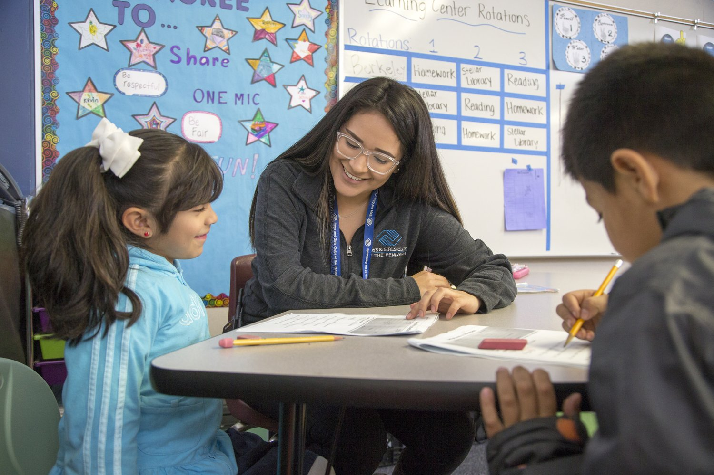
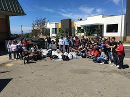

Grina Nguyen
My name is Grina Nguyen and I am an active health advocate for the community. Working in healthcare settings has been my spark of interest for a long time and prompted me to earn a bachelor's degree in biology from the University of California, Riverside. I enjoy interacting with youth and their family members when it comes to offering support on any health issues. Previous experiences I had beforehand, was volunteering at youth programs and participating in an internship with a school clinic environment. Both experiences lead me to communicate with youth and expand my curiosity to participate in a similar workplace setting. Also, these two different environments contributed to my goal to help individuals who are in need of healthcare and to answer questions about it. The position of being a health advocate suits this mindset that I have to assist anyone, especially children and families, to take care of their health and how to use the resources provided to them. Important skills I can bring forward to the job are active listening and responding to questions, emotional support and understanding, as well as strong collaboration tactics to establish memorable connections with everyone. Several of my hobbies include reading, watching reality tv shows or documentaries, and nature walks.
Experience
Volunteer at Boys and Girls Club
• Preformed leadership roles under staff guidance
• Strengthen communication and collobration skills with hands-on activites
• Provide a support network with available resources
Volunteer at Bayside Community Center
• Responsible for bringing awareness to support local communities
• Practicing ideas and contributing non-profitable activites
Volunteer at a Religious Youth Organization
• Participate in learning and teaching different cultures or religions
• Reviewed and discussed reglious studies with other memembers
• Re-incite meaningful songs and prayers
• Joined group actvites to broaden culture aspects
Education
UC Riverside
Portfolio

